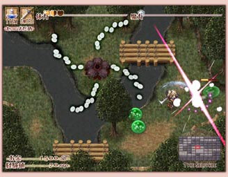

| ◆ 更新履歴 ◆ | |
| 2018. 12. 31 | 開発ブログ 更新 |
| 2017. 12. 31 | 開発ブログ 更新 |
| 2016. 12. 31 | 開発ブログ 更新 |
| 2016. 1. 1 | 開発ブログ 更新 |
| 2014. 12. 31 | 開発ブログ 更新 |
| 2013. 12. 31 | 開発ブログ 更新 |
| 2013. 12. 22 | 開発ブログ 更新 |
| 2013. 12. 1 | サイト公開 |
「プリンセスシェイド リビジョン」 ってどんなゲーム？
|
「プリンセスシェイド リビジョン」は、２Ｄ弾幕シューティングとアクションＲＰＧの面白さを合わせ持つ、「弾幕アクションＲＰＧ」と呼ばれるジャンルのゲームです。 このゲームは前作「ティルキッス～Princess Shade～」の続編にあたりますが、前作とのストーリーの繋がりはないため、前作を遊んでいない方も本作を十分に楽しんでいただくことが可能です。 また、難易度設定やゲームオーバー後の救済措置など、アクションゲームが苦手な方も最後まで安心して楽しめるようなゲームデザインになっています。 さあ、主人公カンパニュラとともに、新しい冒険の旅へと出発しましょう！ |
 |
| タイトル | プリンセスシェイド リビジョン |
| ジャンル | 弾幕アクションＲＰＧ（オリジナル） |
| 対象 | 全年齢 |
| 対応OS | Windows XP/Vista/7 |
| DirectX | 9.0c以上（必須） |
| あったら便利な物 | 4ボタン以上のゲームパッド |